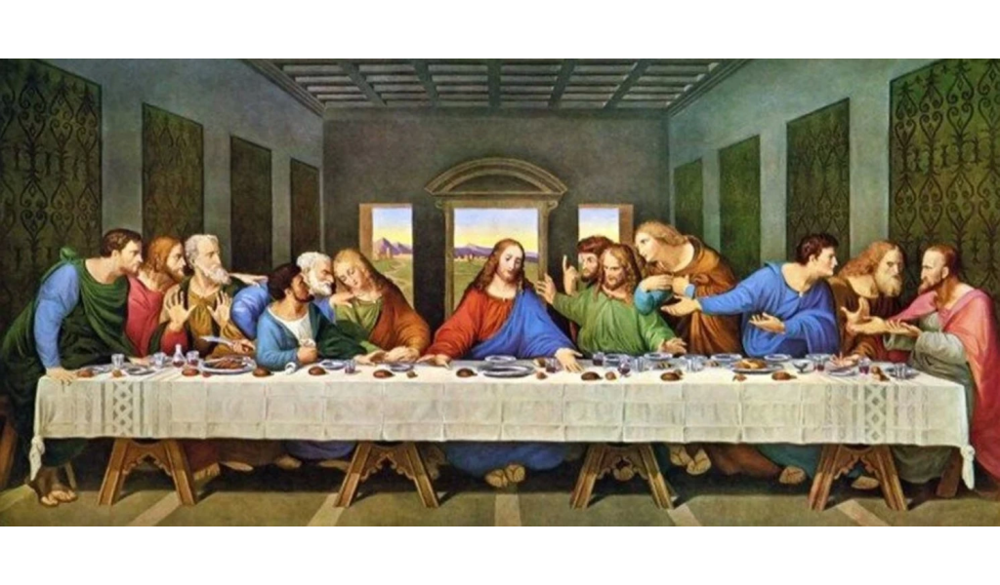

Leonardo da vinci

Leonardo di ser Piero da Vinci (Bu ses hakkındatelaffuz (yardım·bilgi)) (15 Nisan 1452 - 2 Mayıs 1519), Rönesans döneminde yaşamış İtalyan hezârfen, döneminin önemli bir filozofu, astronomu, mimarı, mühendisi, mucidi, matematikçisi, anatomisti, müzisyeni, heykeltıraşı, botanisti, jeoloğu, kartografı, yazarı ve ressamıdır. En tanınmış yapıtları Vitruvius Adamı (1490-1492), Mona Lisa (1503-1507) ve son Akşam Yemeği'dir (1495-1497). Rönesans sanatını doruğuna ulaştırmış, yalnız sanat yapısına değil, çeşitli alanlardaki araştırmaları ve buluşlarıyla da tanınan, dünyanın gelmiş geçmiş en büyük sanatçılarından ve dehalarından biri kabul edilmektedir.[1]
Son Akşam Yemeği
Son Akşam Yemeği ya da Son Yemek [İngilizce: The Last Supper (Dı Lest Sapır), İtalyanca: Il Cenacolo (İl Çenakolo) ya da L'Ultima Cena (Lultima Çena)], Hristiyan inanışına göre İsa'nın çarmıha gerilmesinden önceki akşam havarileriyle yediği son yemek. Cena (Lultima Çena)], Hristiyan inanışına göre İsa'nın çarmıha gerilmesinden önceki akşam havarileriyle yediği son yemek.